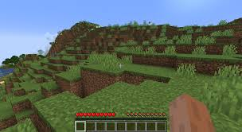
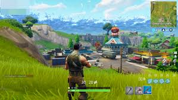

What are Video Games?


Video games are a form of interactive entertainment enjoyed by millions worldwide. They range from simple puzzles to complex, story-driven adventures.
Why Are Video Games Popular?
- Entertainment: They provide fun and relaxation for people of all ages.
- Social Connection: Multiplayer games allow players to connect with friends and strangers from across the globe.
- Learning: Educational games teach skills, from math and science to critical thinking and teamwork.
- Immersion: Advanced graphics and storytelling let players dive into imaginative worlds.
Genres of Video Games
Video games come in a variety of genres, catering to different preferences and playstyles. Some popular genres include:
- Action: Fast-paced gameplay that emphasizes combat and reflexes (e.g., Call of Duty).
- Role-Playing Games (RPGs): Story-driven games where players develop characters and complete quests (e.g., The Elder Scrolls V: Skyrim).
- Simulation: Games that mimic real-world activities, such as farming or city-building (e.g., Stardew Valley, The Sims).
- Sports: Games that recreate real or fictional sports (e.g., FIFA, NBA 2K).
- Puzzle: Games that test problem-solving skills (e.g., Tetris, Portal).
- Adventure: Exploration-focused games that emphasize story and discovery (e.g., The Legend of Zelda).